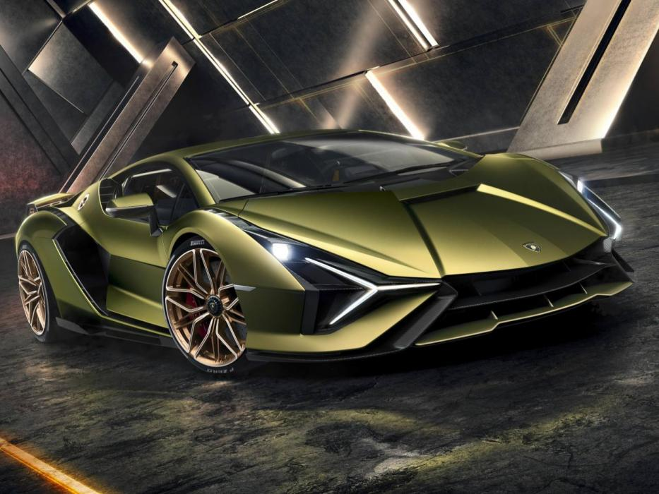

Super Deportivos
 Un automóvil superdeportivo es un automóvil cuyas prestaciones son altamente superiores a las de los demás automóviles, acercándose o excediendo niveles de competición. Estos suelen utilizar materiales poco convencionales en los automóviles de producción en serie como fibra de carbono, Kevlar y aleaciones de aluminio, magnesio, molibdeno o titanio, para reducir el peso y obtener mejores prestaciones. Por esta misma razón suelen ser mucho más costosos que un deportivo masivo de altas prestaciones. Esto a su vez causa que los superdeportivos se produzcan en pequeñas series o bajo pedido, lo cual a su vez aumenta su exclusividad. Muchos de ellos se elaboran en parte de su proceso de fabricación a mano. Existen muchas marcas de superdeportivos, que se mantienen dentro de la exclusividad del mercado y por lo tanto no son del dominio público, como en el caso de Ferrari, Lamborghini o Aston Martin. Frecuentemente estos automóviles son los que presentan el mayor desarrollo tecnológico en cuanto a sistemas de propulsión, seguridad y confort, y paulatinamente éstas cualidades van implementándose en los automóviles de producción conforme las tecnologías van bajando de costes o su uso comienza a ser necesario para el funcionamiento, seguridad, etc. Pagani Zonda PS (2013). Los Pagani Zonda son automóviles superdeportivos que supera la barrera de los 300 Km/h gracias a su motor V12. Mclaren 570S Spider (2017). De 0-100Km/h en 3,2 segundos con una velocidad maxima de 328 Km/h Ferrari LaFerrari marco un record de 1'20 en el circuito de Fiorano La aplicación apropiada de este término es subjetiva y disputada, especialmente entre los entusiastas del automóvil. Aunque no es una cifra o característica que pueda catalogarse o reconocerse globalmente como aceptable, e inclusive práctica, es cierto que la gran mayoría de los superdeportivos son aquellos que tienen un costo de fabricación por encima de los 125.000 dólares norteamericanos con excepción de berlinas de lujo como las de Bentley o Maybach, por ejemplo. Sobre los orígenes, hay consenso en que los automóviles que fueron considerados como los primeros superdeportivos fueron el Mercedes-Benz 300 SL "Gullwing", el Ferrari 250 GTO y los Lamborghini Miura y/o Countach entre los más importantes. De 1994 hasta 2005 el superdeportivo más rápido fue el McLaren F1 hasta que el Koenigsegg CCR se lo arrebató. Ese mismo año, y hasta 2007, el Bugatti Veyron se convirtió en el automóvil de calle más rápido del mundo con una velocidad máxima de 407 km/h, hasta que fue superado por el SSC Ultimate Aero con un récord de 413 km/h (257 mph), luego Bugatti volvió a hacerse con el récord mundial al presentar el Bugatti Veyron 16.4 Super Sport con 1200 CV de potencia y una velocidad máxima de 431 km/h. Luego de que Bugatti rompiera el récord de coche más rápido SSC lanzó un nuevo concepto a nivel deportivo, que cuenta con una potencia de 1350 CV y alcanza una velocidad máxima de 442 km/h. Posterior a esto el Hennessey Venom GT tiene actualmente el récord por el auto de producción más rápido del mundo, alcanzando una velocidad de 435.31 km/h (270.49 mph), que fue alcanzada en solamente 2 millas (3.22 km, lo que es muy poco espacio). Hennessey Performance Engineering afirma que el Hennessey Venom GT puede alcanzar los 442 km/h (275 mph), dejando atrás al Bugatti Veyron Super Sport, que está limitada a 431 km/h (267.8 mph). Su producción está limitada a 30 unidades y solo 5 World Record Edition que es capaz de ir a 431 km/h (267.8 mph). También el Hennessey Venom GT tiene el Récord Guiness de Aceleración de 0-300 km/h (0-186 mph), en solo 13.63 segundos superando al Koenigsegg Agera R que lo hizo en 14.53 segundos y al Bugatti Veyron Super Sport que lo hizo en 14.6 segundos. Actualmente el superdeportivo eléctrico más rápido del mercado es el Rimac Concept_One, que acelera de 0 a 300 km/h en 14,2 segundos, superando al Bugatti Veyron Super Sport y al Koenigsegg Agera R, y alcanza una velocidad máxima de 355 km/h.